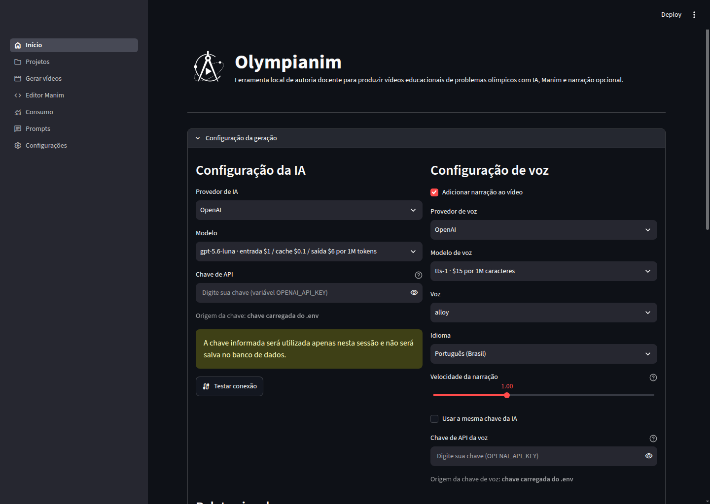

Entrada multimodal orientada pelo professor
Digite o enunciado ou envie imagens. Anexe uma resolução, instruções pedagógicas e objetos visuais que podem entrar na animação.
apresentação do projeto · código aberto
Projeto de pesquisa e desenvolvimento sobre autoria docente de animações para educação matemática. O protótipo organiza agentes de IA Gen, Manim, narração sincronizada e revisão humana em um fluxo supervisionado.
00 / proposta
O Olympianim é um aplicativo local de autoria docente que organiza a produção de vídeos de apresentação e resolução para problemas de matemática olímpica, combinando IA Gen, Manim e revisão do professor.
01 / estudos de caso
Os problemas de referência vêm da 20ª OBMEP 2025, da 4ª Olimpíada Mirim — OBMEP 2025 e da 7ª Competição Elon Lages Lima de Matemática 2026. Os enunciados não são reproduzidos nesta página; consulte as fontes oficiais indicadas em cada estudo. Enunciados, marcas e materiais correlatos permanecem sob os direitos de seus titulares e não integram a licença MIT do aplicativo.
02 / escopo do protótipo
O protótipo reúne planejamento didático, geração e edição de código, renderização e documentação do processo em um fluxo supervisionado.
Digite o enunciado ou envie imagens. Anexe uma resolução, instruções pedagógicas e objetos visuais que podem entrar na animação.
Solucionador, planejador, construtor e depurador atuam em etapas distintas.
Base matemática, planos e códigos param para revisão. Nada é renderizado sem aprovação.
Manim Voiceover coordena fala e animação. O app preserva SRT e transcrição de cada vídeo.
Edite Python diretamente ou peça uma proposta à IA Gen. Salve conscientemente, restaure versões e renderize de novo com outra voz.
Baixe o SRT ou incorpore legendas coloridas ao MP4.
Chamadas, tokens, áudio e custo estimado por projeto, agente, modelo e período.
Gere um ZIP do projeto com prompts, vídeos e códigos.
03 / fluxo de produção
O fluxo gera primeiro a apresentação do problema, e depois a resolução.
Enunciado e respectivas imagens; objetos visuais; solução textual ou fotografada, quando fornecida; orientações do usuário; modelo de IA Gen, voz e paleta de cores selecionados.
Uma solução textual enviada pelo usuário é adotada diretamente. Se houver uma imagem da solução, o solucionador a interpreta; se não houver solução, ele produz uma proposta matemática.
Bases produzidas pelo modelo aguardam aprovação, edição ou nova geração antes de continuar.
O planejador recebe o enunciado, as orientações e a base matemática e gera o roteiro.
O usuário pode editar, regenerar ou aprovar o plano.
O construtor converte o plano aprovado em código Manim com narração e sincronização.
O usuário pode editar, regenerar ou aprovar o código.
O código aprovado é renderizado. Uma falha causada pelo código pode acionar o corretor e uma nova tentativa, até o limite configurado.
Saída: vídeo de apresentação, legendas e transcrição.
O aplicativo exibe a apresentação e aguarda o usuário selecionar Gerar resolução.
O planejador usa o enunciado, as orientações e a mesma base matemática definida no início.
O usuário pode editar, regenerar ou aprovar o plano.
O construtor converte o plano aprovado em outro código Manim com narração e sincronização.
O usuário pode editar, regenerar ou aprovar o código.
O código aprovado é renderizado e segue o mesmo ciclo de correção técnica usado na apresentação.
Saída: vídeo de resolução.
04 / stack e arquitetura
A aplicação é escrita em Python e executada localmente. A separação por camadas mantém interface, orquestração, produção audiovisual e persistência com responsabilidades identificáveis.
interface e autoria
Interface multipágina, formulários de revisão, estado de sessão e Editor Manim com controle explícito de versões.
agentes e estado
Grafo de agentes, checkpoints por projeto, interrupções para aprovação humana e retomada das etapas.
animação, voz e vídeo
Construção das cenas, sincronização da narração, legendas SRT e renderização com FFmpeg, Cairo, Pango e LaTeX.
dados e contratos
Projetos, eventos, versões, preferências e checkpoints locais, com contratos tipados para os dados do fluxo.
Linguagem oficial de desenvolvimento da aplicação.
Adaptadores opcionais; o modelo pode ser escolhido por etapa.
05 / interface do protótipo
Conheça as áreas disponíveis no aplicativo. As capturas foram feitas na versão atual do Olympianim.

06 / licença e custos
O código-fonte original do aplicativo Olympianim é gratuito e disponibilizado sob a licença MIT. Para utilizar o fluxo de geração da versão atual, o usuário precisa conectar sua própria chave de API da OpenAI, Google ou Anthropic. Esses serviços são externos e podem cobrar pelo consumo diretamente em suas plataformas.
Qualquer pessoa pode baixar, instalar e modificar o código original do Olympianim conforme as condições da licença MIT.
OpenAI, Google e Anthropic mantêm suas próprias contas, preços e cobranças. É responsabilidade do usuário conectar sua própria chave de API.
Como o código é aberto, desenvolvedores podem modificá-lo e implementar adaptadores para outros modelos ou serviços de IA Gen.
O Olympianim não vende créditos e não define os preços praticados pelos provedores, somente estabelece como serão utilizados.
Ver código no GitHub07 / provedores compatíveis
O catálogo suporta OpenAI, Google e Anthropic para texto, além de OpenAI e Google para voz. A seleção pode mudar entre solução, planejamento, construção e edição.
Disponibilidade e preços pertencem aos provedores e podem mudar. O aplicativo usa suas próprias chaves de API.
08 / limitações
O Olympianim é um protótipo de pesquisa. Os pontos abaixo registram suas restrições técnicas e operacionais e delimitam a evidência disponível até o momento.
infraestrutura
Geração por IA Gen e algumas vozes dependem de APIs sujeitas a custo, cota, latência, indisponibilidade e mudanças de comportamento dos modelos.
execução
Manim, LaTeX, fontes, FFmpeg, Cairo e Pango precisam estar corretamente instalados. Diferenças de versão ou configuração podem alterar ou impedir a renderização.
autoria e refinamento
O aplicativo é um protótipo e permite produzir animações sem escrever código, mas o resultado pode exigir ajustes técnicos, visuais, de composição, ritmo ou sincronização.
evidência educacional
Os exemplos comprovam a execução do fluxo, mas não demonstram, isoladamente, ganho de aprendizagem, pois não houve aplicação em contexto de sala de aula.
O Olympianim é um protótipo de pesquisa e as limitações listadas são inerentes à versão atual. O desenvolvimento prossegue visando aprimorar a experiência de autoria e explorar novas integrações.
09 / pesquisa
O artigo que apresenta o sistema foi publicado na Revista Tecnologias Educacionais em Rede (ReTER) e está disponível para leitura.
código · documentação · estudos de caso